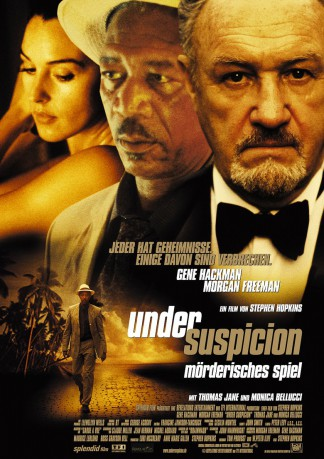

#3174 Under Suspicion - Mörderisches Spiel
 gesehen am 11.02.2016
gesehen am 11.02.2016
 
 IMDB-Wertung: 6.5 / 10
IMDB-Wertung: 6.5 / 10  Metascore: 43
Metascore: 43 
US-amerikanischer Thriller von Stephen Hopkins. Der Anwalt Hearst findet beim Joggen eine Leiche. Der ermittelnde Kommissar Benezet glaubt, dass es sich bei Hearst selbst um den Vergewaltiger und Mörder handeln kann, da es noch einen ähnlichen Fall gab bei dem er auch am Tatort war. Es kommt zu einem sehr eindringlichen Verhör bei dem auch Hearsts Frau aussagt.
Jahr: 2000
Dauer: 110 Minuten
FSK: 12
Land: Frankreich Studio: Splendid FilmTonspuren:
Untertitel:
Auflösung: SD (640x352) Größe: 699 MB
Genre: Thriller, Drama, Krimi
Regisseur:  Stephen Hopkins
Stephen Hopkins
Drehbuch: John Wainwright, Claude Miller, Jean Herman, Michel Audiard, Tom Provost
Soundtrack: BT
Darsteller:
 Gene Hackman als Henry Hearst
Gene Hackman als Henry Hearst Morgan Freeman als Captain Victor Benezet
Morgan Freeman als Captain Victor Benezet Thomas Jane als Detective Felix Owens
Thomas Jane als Detective Felix Owens Monica Bellucci als Chantal Hearst
Monica Bellucci als Chantal Hearst- Miguel Ángel Suárez als Superintendent
- Jacqueline Duprey als Maria Rodriguez
- Conchita Vicens als Ruthanne
 Mike Gomez als Singer
Mike Gomez als Singer- Luisa Leschin als Singer
- Vanessa Marquez als Singer
- Norma Maldonado als Singer
 Richard Miro als Singer
Richard Miro als Singer Al Rodrigo als Singer
Al Rodrigo als Singer Marcelo Tubert als Singer
Marcelo Tubert als Singer- Miguel Zayas als Ballroom Musician
- Nydia Caro als Isabella
- Pablo Cunqueiro als Detective Castillo
- Isabel Algaze als Camille Rodriguez
- Luis Caballero als Paco Rodriguez
- Patricia Beato als Darlita
- Sahyly Esponda als Reina
- Hector Travieso als Peter
- Marisol Calero als Sergeant Arias
- Vanessa Shenk als Sue Ellen Huddy
- Gelian Cotto als Paulina Valera
- Myron Herrick als Mr. Ricardi
- Vanesa Millán als Wife #1
- Zina Ponder Pistor als Wife #2
- Willie Denton als Ben
- Ramon Saldana als Raymond
- Rene Cervoni als Thomas
- Frank Rose als Drunken Acquaintance
- Odaylys Nanin als Singer
- Victor M. Candelario als Ballroom Musician
- Rafi Escudero als Ballroom Musician
- Juan Luis Garcia als Ballroom Musician
- Miguel Martínez als Ballroom Musician
- Eddie Santiago Ortiz als Ballroom Musician
- Eliezer Dávila Ruiz als Ballroom Musician
Datei: X:\2000\Under Suspicion - Mörderisches Spiel (2000, FSK12, 640x352).avi seit 10.02.2016
Festplatte: HD 1996-2002
 Es gibt insgesamt 82 Filme in der Gruppe '2000'
Es gibt insgesamt 82 Filme in der Gruppe '2000'